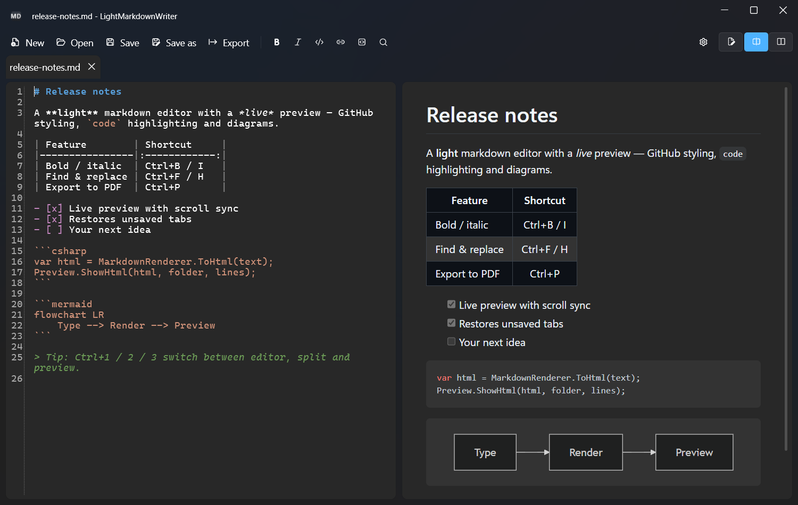

Write markdown. See it as you type.
A light editor for Windows 11 with a live GitHub-style preview, scroll sync, and tabs that come back exactly as you left them.
Download for Windows
Version 1.1.0 installer, everything included.
Prefer no install? Get the portable exe.
Prefer no install? Get the portable exe.
# Release notes A **light** markdown editor with a *live* preview and `code` highlighting. | Feature | Shortcut ||----------------|------------|| Bold / italic | Ctrl+B / I || Find & replace | Ctrl+F / H | - [x] Scroll sync- [x] Restores unsaved tabs- [ ] Your next idea ```jsconst greet = (name) => `Hi ${name}`;``` > Read it here, or in [the README](README.md).
Release notes
A light markdown editor with a live preview and code highlighting.
| Feature | Shortcut |
|---|---|
| Bold / italic | Ctrl+B / I |
| Find & replace | Ctrl+F / H |
- Scroll sync
- Restores unsaved tabs
- Your next idea
const greet = (name) => `Hi ${name}`;Read it here, or in the README.
These are the app's own view buttons. In the app, Ctrl+1, Ctrl+2 and Ctrl+3 do the same.
What it does
- Preview that looks like GitHub
- Tables, task lists, footnotes, highlighted code and Mermaid diagrams, in light or dark. Everything works offline.
- Both panes stay in step
- Scroll either side and the other follows by source line, so tall images and diagrams never throw it off.
- Nothing to save on exit
- Close the window any time. Every tab, its unsaved text, cursor and scroll position are back next time.
- Notices outside edits
- If another program changes an open file, a clean tab reloads in place. With unsaved edits, you choose which version to keep.
- Helps you write
- Syntax colors, shortcuts for bold, italic, links and code blocks, lists that continue on Enter, and find & replace with regex.
- Export or paste anywhere
- Save a standalone HTML file or a PDF, or copy as HTML that pastes cleanly into Outlook, Word or Teams.
- Feels like Windows 11
- Mica, Fluent controls, and your Windows light/dark theme and accent color.
- One small file
- A single portable exe. Open a .md file while it's running and it joins the same window as a new tab.

Keyboard shortcuts
| New, open, save, save as | Ctrl+N Ctrl+O Ctrl+S Ctrl+Shift+S |
| Editor, split, preview | Ctrl+1 Ctrl+2 Ctrl+3 |
| Bold, italic, inline code | Ctrl+B Ctrl+I Ctrl+E |
| Link, code block | Ctrl+K Ctrl+Shift+K |
| Find, replace, next match | Ctrl+F Ctrl+H F3 |
| Next tab, close tab | Ctrl+Tab Ctrl+W |
| Export HTML, export PDF, copy as HTML | Ctrl+Shift+E Ctrl+P Ctrl+Shift+C |
| Settings | Ctrl+, |
Install
- Download the installer. It includes .NET, so there's nothing else to install, and it needs no admin rights.
- Run it. Windows may warn that the app isn't recognized, because it isn't code-signed: choose More info, then Run anyway.
- Keep Open .md and .markdown files ticked. If no other app opens .md files yet, double-clicking one now opens LightMarkdownWriter.
- If another app already opens them, leave the last option ticked: Windows Settings opens on LightMarkdownWriter, and Set default switches it. Only you can change a default app in Windows.
Works on Windows 10 1809 or later, and is designed for Windows 11. The portable exe is a single 15 MB file you can run from anywhere; it needs the .NET 10 Desktop Runtime. Each release lists SHA-256 checksums for both downloads.